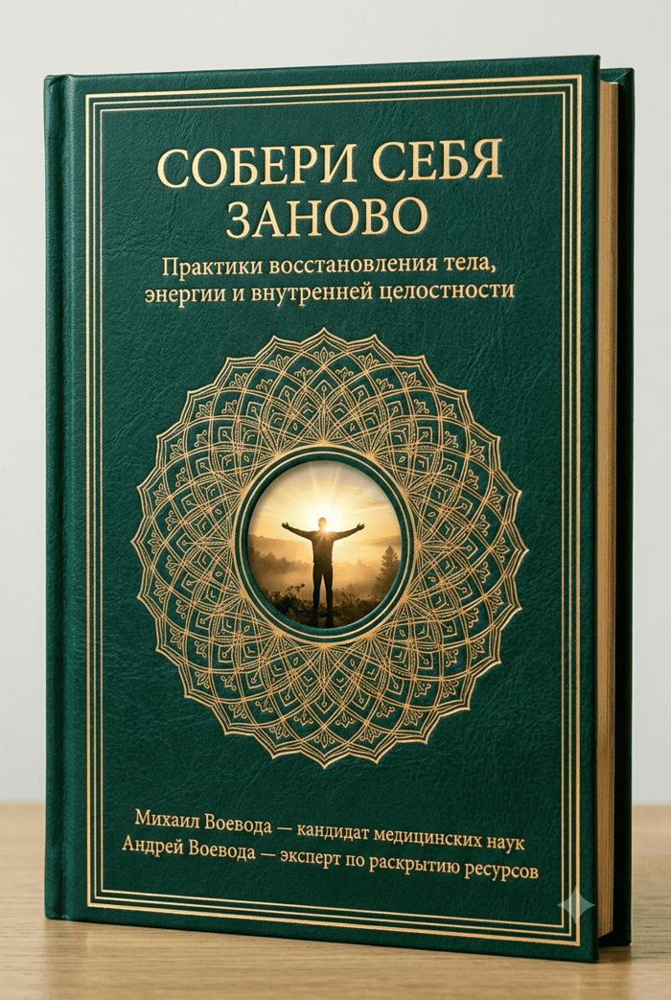

Усталость и увядание — это не возраст. Это блокировка. До 80% вашей энергии уходит на скрытую внутреннюю оборону. Узнайте, как снять эту блокировку без изнуряющего спорта, диет и горстей таблеток.
«Мы лечим не то, что болит»: почему бесполезно глушить усталость кофе, пить горстями витамины и мазать ноющую спину, когда настоящая причина упадка сил — в глухих мышечных зажимах, спазме сосудов и перегрузке внутренних органов от скрытого стресса.
Биохимия обычной тарелки и тишина ума: как простое изменение очередности блюд за обедом и 30 секунд перед сном меняют гормональный фон, работу сердца и глубину сна.
Энергия, которую фиксируют приборы: как за 5–15 минут в день распечатать запертые резервы тела и перевести нервную систему из режима «выживания» в состояние созидания.
Михаил Воевода — к.м.н., доцент кафедры хирургии, сосудистый хирург (30 лет у операционного стола), прямой ученик Гранд Мастера кунг-фу Ли Хонг Тая.
Андрей Воевода — исследователь скрытых ресурсов организма, нейробиологии привычек и системного восстановления.
PDF-формат (117 стр.) • Мгновенный доступ

PDF-формат (117 стр.) • Мгновенный доступ
Представьте автомобиль, у которого водитель вдавил педаль газа в пол, но забыл опустить ручной тормоз. Двигатель ревёт на пределе, бензин сгорает литрами, колодки дымятся — а машина еле ползёт вперёд.
Наше тело не умеет отличать реальную физическую угрозу от вашей тревожной мысли, финансового дедлайна или проглоченной обиды. В ответ на фоновый стресс мозг переводит организм в режим «скрытой осады»:
Куда уходит 100% сил в режиме «автопилота»:
Отметьте состояния, которые вы замечали у себя за последний месяц:
Диагностика состояния
Отметьте хотя бы один пункт выше — и вы увидите, почему обычные советы «больше отдыхать» не работают.
«Когда стоишь у операционного стола три десятилетия, видишь человеческий организм без прикрас. Видишь, как спазмируются и теряют эластичность сосуды, как задыхаются от застоя внутренние органы, как гаснет жизненная сила даже у совсем не старых людей.
Но самое главное открытие пришло со временем: здоровье человека не начинается в операционной и не заканчивается рецептом на таблетки. Таблетка утром и капли вечером лишь приглушают аварийную лампочку на приборной панели, пока продолжает тлеть корень проблемы.
Мы лечим следствия по отдельности — отдельно шею, отдельно желудок, отдельно давление, отдельно бессонницу. Но человек — это единая живая система, где одна тревожная мысль мгновенно меняет биохимию крови и тонус сосудов».
Именно поэтому кандидат медицинских наук, доцент Михаил Воевода отправился искать недостающее звено за пределы больничных стен — став прямым учеником Гранд Мастера кунг-фу Ли Хонг Тая. А вместе с исследователем нейробиологии и системного восстановления Андреем Воеводой они более 12 лет исследовали, тестировали и отбирали на собственном опыте стык западной физиологии и закрытых восточных практик, оставляя лишь то, что действительно возвращает телу ресурс и дает железобетонный результат.
Никакой сомнительной эзотерики или изнуряющих нагрузок. Каждое движение, дыхательный цикл и пищевая привычка выверены с точки зрения анатомии сосудов, позвоночника и гормонов.
В книгу вошли тонкие биомеханические и энергетические нюансы восточной школы, которые невозможно найти в открытых роликах в интернете — там часто показывают лишь внешнюю форму, теряя внутренний ключ.
Она соединяет в один пазл работу с подсознанием, культуру питания и питьевого режима, здоровье печени и сердца, чистоту сосудов мозга, дыхание и более 30 практических инструментов с пошаговыми фотоинструкциями: от утренней гимнастики до работы с состоянием.
Почему хронический стресс бьет у мужчин и женщин по совершенно разным органам? Вы узнаете, почему спазм одного микроскопического клапана блокирует отток желчи, и почему без его расслабления любые «чистки» организма бесполезны.
Когда в момент тревоги мы начинаем панически и часто дышать, срабатывает опасный физиологический сбой: мы буквально «выдуваем» из организма углекислый газ. Без этого ключевого газа сосуды мозга мгновенно спазмируются, а эритроциты перестают отдавать кислород тканям.
То, что древние мастера называли «энергетическими каналами», современная наука открыла как фасциальную сеть, вырабатывающую реальный пьезоэлектрический ток для питания клеток. Но от стресса эта сеть «высыхает», внутренний ток падает, и зажатое тело стягивает нас, как тесный скафандр.
Два человека могут съесть абсолютно одинаковый обед, но первый почувствует вялость и упадок сил, а второй — чистый прилив энергии. Всё дело в подходе к выбору продуктов, их приготовлению и последовательности.
Как поддержать сердечную мышцу простыми средствами? Домашний питательный комплекс без аптечной «химии». А также глубокая техника работы с мышцами шеи и лица, которая снимает зажимы у основания черепа и разглаживает морщины.
Уговоры себя «не волноваться» бесполезны, пока ваш мозг заперт в бета-ритме защитного контроля. Но существует короткий нейрофизиологический протокол, который за считанные секунды переводит нервную систему в альфа-ритм.
Научно доказанный факт: сердце человека создает мощнейшее тороидальное электромагнитное поле, радиус которого достигает нескольких метров. Когда вы охвачены стрессом, это поле становится хаотичным — и дети через систему зеркальных нейронов мгновенно считывают его, отвечая капризами и тревожностью. В книге раскрыты practices восстановления внутреннего баланса: вечерний ритуал очищения биополя, секреты чайного созерцания и 4 ключа общения с ребенком от рождения до 18 лет.
PDF-формат (117 стр.) • Мгновенный доступ
Вам не нужно становиться монахом или проводить часы в спортзале. Система встраивается в ваш обычный день через короткие приятные ритуалы (от 5 минут прямо в постели). Переключите вкладки ниже и почувствуйте разницу:
Будильник вырывает из поверхностного сна. Рука по привычке сразу тянется к смартфону и новостям — в ту же секунду подскакивает кортизол, шея и поясница ноют от ночного зажима, а в голове туман, который не разогнать даже большой чашкой крепкого кофе.
Еда перед монитором и «выключение» мозга. Быстрый обед вприкуску с рабочими чатами и фоновым стрессом. Вместо обещанного прилива сил — тяжелый свинцовый занавес уже через 30 минут: веки слипаются, мысли путаются, а перед монитором хочется просто закрыть глаза. Вы пытаетесь заставить себя работать, но мозг отказывается соображать.
Поход в аптеку / БАДы наугад
Бесконечный слив бюджета
Горсти витаминов и таблеток дают лишь иллюзию заботы о здоровье. Симптомы уходят на пару дней, но корень проблемы остается — потому что организм не учится помогать себе самостоятельно.
Один сеанс массажа спины
Иллюзия решения
Это временная внешняя помощь, а не навык саморегуляции. Вы платите за разовое расслабление, но без ежедневной работы с телом мышечный панцирь затягивается обратно уже на третий день.
КНИГА-СИСТЕМА «СОБЕРИ СЕБЯ ЗАНОВО»
Концентрат 30 лет хирургической практики и восточного мастерства. Фундаментальная система самовосстановления и долголетия, которая остается в вашей семейной библиотеке навсегда.
PDF-формат (117 стр.) • Мгновенный доступ
🌍 Оплата картой любого банка, СБП
Сон больше не приносит восстановления: вы просыпаетесь разбитым и чувствуете дефицит сил с первых минут дня.
Тело словно заковано в панцирь: шея, плечи и поясница постоянно каменеют от сидячей работы и накопленного стресса.
Безуспешно тратили деньги на витамины, БАДы и бесконечные обследования, но базовый уровень энергии и здоровья так и не вернулся.
Вам нужна целостная система от практикующего врача, которая объединяет глубокое восстановление, внутренний баланс и питание, собирая организм в единый работающий механизм.
«Купила книгу без особых надежд, просто потому что надоело просыпаться среди ночи с тяжелым сердцем. Написано очень понятно, без лишней академической заумности. Понравились дыхательные упражнения и правила по еде — наконец-то ушла эта дурацкая тяжесть после обеда. Сплю спокойнее, и по утрам уже нет прежнего тумана в голове.»
«Для меня решающим стало то, что Михаил — действующий сосудистый хирург, к.м.н. Когда он объясняет, как пережимаются сосуды, почему хрустят суставы и как углекислый газ открывает доступ кислороду в мозг — в голове складывается весь пазл. Шея и поясница ожили уже через неделю».
«Начали с мужем выполнять утреннюю разминку для сосудов прямо в постели. Давление перестало скакать как раньше, ушла тревожность, появились жизненные силы. Рекомендую к приобретению».
Кнопка переводит вас на официальную международную платформу цифровых товаров Lavatop. Там вы можете одним кликом выбрать удобную валюту и безопасно оплатить книгу картой любого банка или через СБП.
Доступ открывается мгновенно после оплаты (плюс сылка на файл автоматически дублируется на вашу электронную почту). Вы получаете полную иллюстрированную версию в универсальном формате PDF (117 страниц).
Да, книга создана хирургом, к.м.н. именно для бережного, физиологичного восстановления организма. Здесь нет изнуряющих тренировок, прыжков или сложных поз — все базовые комплексы выполняются мягко, начиная прямо с постели, буквально за 5–10 минут в день.
Организм обладает колоссальным запасом прочности — он годами ждал, когда вы обратите на него внимание. Снимите внутреннее напряжение, верните телу подвижность, а голове — ясность, обретя опору в проверенной системе восстановления
PDF-формат (117 стр.) • Мгновенный доступ
Безопасная оплата через платформу Lavatop • Нажимая кнопку, вы соглашаетесь с условиями публичной оферты.
Настоящий документ является официальным предложением (публичной офертой) физического лица любому лицу заключить договор купли-продажи электронной книги на условиях, изложенных ниже.
1. Общие положения: 1.1. Настоящий договор является публичной офертой в соответствии с действующим законодательством. 1.2. Осуществляя покупку книги, Покупатель соглашается с условиями данной оферты.
2. Предмет договора: 2.1. Продавец обязуется предоставить Покупателю электронную книгу «Собери себя заново» в формате PDF после оплаты.
3. Порядок покупки и оплаты: 3.1. Оплата производится через международную платёжную систему Lavatop. 3.2. После успешной оплаты книга предоставляется автоматически.